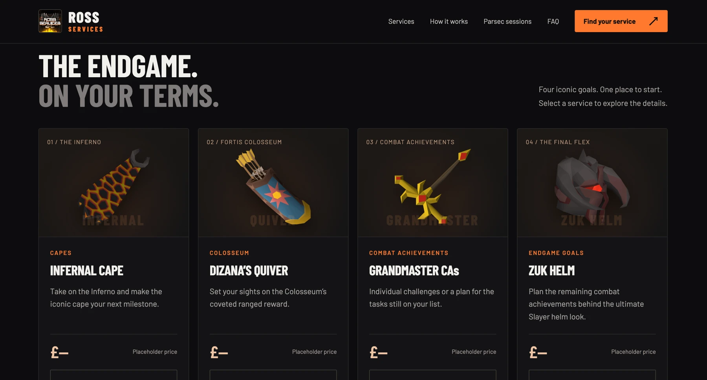
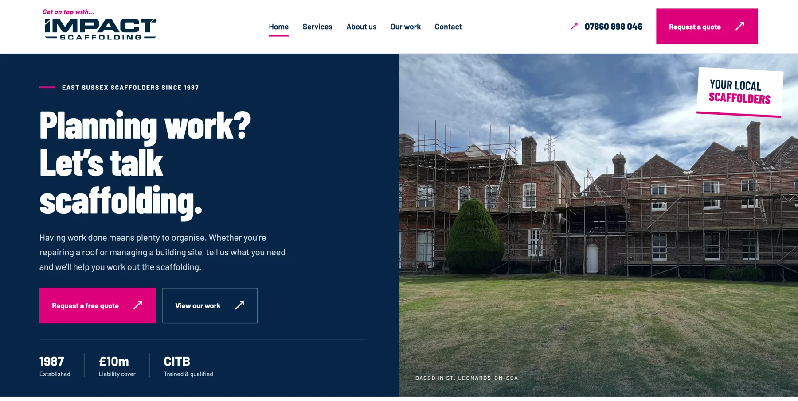
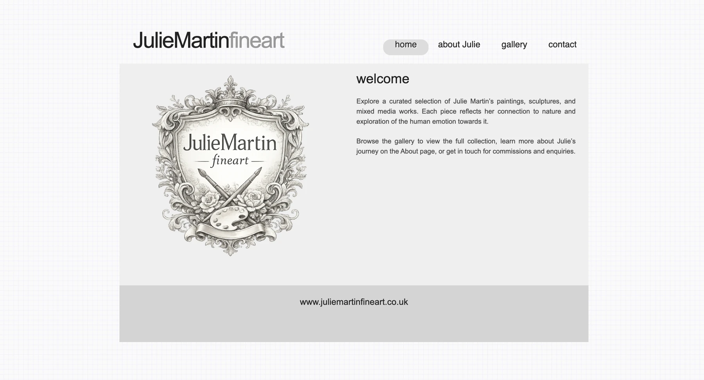

Website portfolio.
View our websites for Impact Scaffolding, Ross Services and Julie Martin Fine Art.
View the portfolio



View our websites for Impact Scaffolding, Ross Services and Julie Martin Fine Art.
View the portfolioSee what each service includes, from a one-page website to ongoing support.
View services and pricingStart with a complete website. Edit the text and photos, arrange the homepage and browse the pages before sending us your design brief.
BUILD YOUR OWN ↗Free to try. No account required.
Uni-Tech is run by Paris and Callum. We design and build websites for businesses in Kent and East Sussex, with a wider team working with us in computer networking.
About usTell us what your business does and what the website needs to include. We’ll confirm the pages, features and price in writing.
We design the pages and build the website using your content. Your package includes two rounds of design revisions.
We check the site on mobile, tablet and desktop, connect your domain and prepare the website for launch.
The editor lets you customise a complete starter website and create a design brief. Uni-Tech then agrees the scope with you, builds the finished site and prepares it for launch.
One-page websites start at £495 and business websites at £995. Redesigns start at £595, with website care from £35 per month. See services and pricing for the included work and additional costs.
Yes. Share your current website and what you’d like to improve, and we’ll talk through a refresh or a rebuild.
Send us your business details and any existing website address. We’ll identify the pages, text and images needed before work begins.